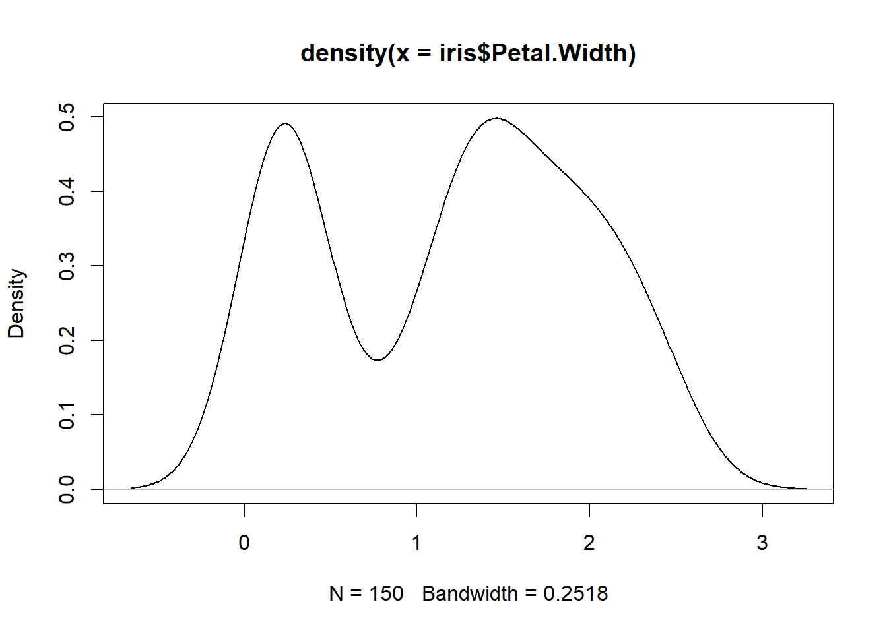

y <- density(iris$Petal.Width)Data Science
Data Science Reflection
Prior to taking this course I did not have a strong, specific sense of what data science is about, just that it is connected to data analysis and statistics. Through this week’s class readings, I have a much better understanding.
- Data Science
-
the overarching field of deriving insights from data
Being a data scientist is about using the relevant tools to derive meaningful insights from data. In smaller companies, data scientists might be generalists, handling data engineering, data analysis, and modeling/inference. In larger settings they might specialize within the field. This is good news for me, because I am not interested in developing a high level of expertise in data engineering!
Data Science Components:
- Data Engineering
- Data Analysis
- Modeling/Inference
In one sense, data science could be considered a more modern, technologically advanced form of statistics. That’s how the words sound to me anyway. This thinking only holds if the definition of statistics is limited to the ideas and theories and doesn’t extend to the tools. Considering how hard it is to do statistics without modern tools, this wouldn’t be a great definition of statistics. These terms seem to be used synonymously at times, but there are shades of difference. According to the Practitioner’s Guide to Data Science, a data scientist focuses more on the data and brings models to the data, while a statistician focuses more on the modeling and brings the data to the models. I am also of the impression that a statistician can be a specialist on a data science team, one that focuses on modeling and inference rather than the information technology, exploratory analysis, and data summarization.
Prior to entering this course and the certificate program for which I am taking this course (Graduate Certificate in Applied Statistics and Data Management), I thought of myself as an aspiring data analyst. With regard to the words data scientist and statistician, I would think of myself more as a data scientist. I have learned a lot about statistics in my first two courses in the program, but the title of statistician still seems like a reach to me. I wanted to increase my statistics knowledge and skills to be a better data analyst, not necessarily to be a statistician. But I am definitely willing to read job descriptions for statisticians and statistics interns now. The phrase “applied statistics” in the name of the certificate program makes it seem more like data science - focusing on the data and bringing the models to the data.
(Sources: R for Data Science and the Practitioner’s Guide to Data Science)
Code
Create an object y defined as R’s density function of the Petal.Width variable of the iris data set:
The object appears in the environment.
Explore the nature of the object:
class(y)[1] "density"typeof(y)[1] "list"str(y)List of 8
$ x : num [1:512] -0.656 -0.648 -0.64 -0.633 -0.625 ...
$ y : num [1:512] 0.00161 0.00178 0.00197 0.00217 0.00239 ...
$ bw : num 0.252
$ n : int 150
$ old.coords: logi FALSE
$ call : language density.default(x = iris$Petal.Width)
$ data.name : chr "iris$Petal.Width"
$ has.na : logi FALSE
- attr(*, "class")= chr "density"Output is generated. the class is density, the type is list, and the structure is list of 8…
Plot the object y, hiding the code in final document:

Plot is generated. The echo: false option disables the printing of code (only output is displayed).